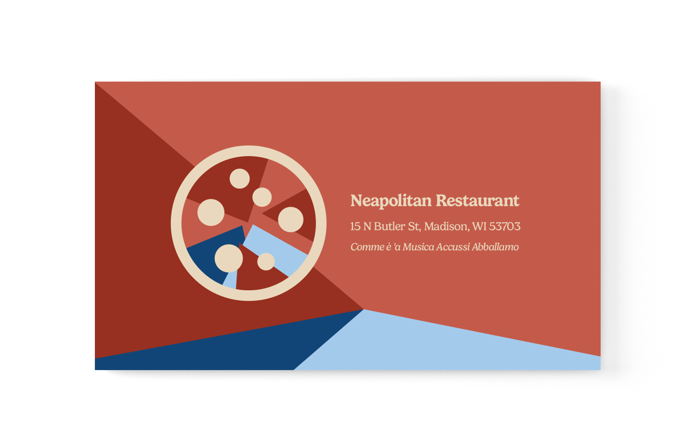

Branding & Identity
Complete brand identity systems from research through final applications.
Naples 15
A full rebrand for Naples 15, a real Italian restaurant in Madison, WI. The identity draws from the restaurant's roots in Naples — incorporating Mount Vesuvius into the pizza icon and pulling colors from SSC Napoli's iconic kit. The system balances Old World warmth with a clean, contemporary structure.

Research & Exploration


Final Logo System


Color Palette

Applications


Caffe Buzzino
Brand identity for a fictional Italian cafe, built around the tagline "An Afternoon in Italy." The system includes a primary logo, comprehensive style guide, typography system, color palette, and packaging design for coffee bag products.
View Full Style Guide (PDF) →
Brand Guidelines


Logo & Identity


Typography & Color


Packaging